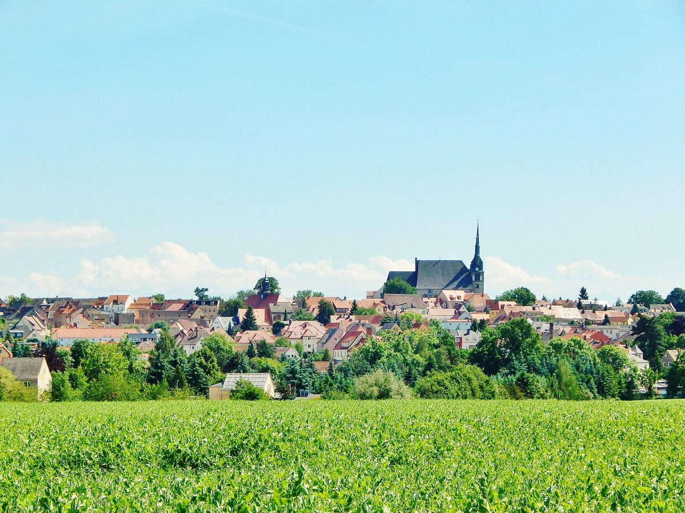

독일 작센 롬마치, 연 14만4,000유로 풍력 수입 누리다 교체 거부…시장 "주도권 스스로 내줘"

2023년 시의회가 낡은 풍력기 7기 교체에 반대하고 인근 주민 전기요금 보너스는 논의도 못 해…새 우선지역 계획에서 빠진 19기는 수명 다하면 교체 어려워, 작센선 4만 명이 풍력 확대 중단 주민발의 서명
독일 작센주의 소도시 롬마치(Lommatzsch)가 오랫동안 풍력 수입으로 살림을 보태다가 풍력 반대로 돌아서면서 계획 주도권과 앞으로의 수입을 함께 잃게 됐다고 아니타 마스(Anita Maaß) 시장이 밝혔다. 시에 따르면 시내 투멜베르크·뵐키슈 두 풍력 지역은 2022년까지 해마다 평균 약 14만4,000유로를 시 금고에 넣었는데, 전체 예산이 900만~1,200만 유로이고 오랫동안 빚이 많았던 시로서는 큰 돈이어서 운동장 조명 시설 등을 이 돈으로 마련했다. 그러나 2023년 한 투자자가 투멜베르크의 낡은 풍력기 7기를 새 7기로 바꾸려 하자 시의회가 강하게 반대했고, 투자자가 바로 옆 주민에게 내놓은 전기요금 보너스는 시의회에서 논의조차 되지 못했다. 시가 새 풍력 우선지역 지정을 거부하면서 새 풍력 부지는 시의 영향력 밖에서 정해지게 됐고, 지금 두 지역에 있는 풍력기 19기는 새 우선지역 계획에 들어가지 않아 수명이 다해도 새 설비로 바꾸기 어려울 전망이다. 마스 시장은 "우리는 주도권을 스스로 내주고 있다"며 최악의 경우 주변에 새 설비가 들어서도 시는 거의 이익을 얻지 못할 것이라고 우려했고, 분위기가 바뀐 까닭을 새 사실보다 코로나 시기 이후 커진 국가 결정에 대한 불신에서 찾았다. 작센은 풍력기가 가장 적은 주 가운데 하나지만 4만 명이 풍력 확대 중단을 요구하는 주민발의에 서명했으며, 트리어대 정치학자 마네스 바이스키르허 교수는 지분 참여와 보상금이 수용성을 높일 수 있어도 주민이 발언권이나 자연·경관이 위협받는다고 느끼면 충분하지 않다는 연구 결과를 소개했다.
시민에너지 관점
롬마치는 해마다 14만4,000유로를 받던 마을도 결정 과정에서 밀려났다고 느끼면 등을 돌릴 수 있고, 등을 돌린 대가로 계획권과 수입을 함께 잃는다는 것을 보여 준다. 주민이 싫다면 풍력을 접는 것이 민주적이라는 반론도 있지만, 롬마치의 경우 거부가 풍력을 막은 것이 아니라 주변에 남의 풍력이 들어설 자리를 내주고 지금 있는 19기의 미래까지 닫는 결과로 이어지고 있다. 학자가 소개한 연구처럼 돈을 나누는 것만으로는 부족하고, 주민이 처음부터 부지와 규모를 함께 정하고 설비의 주인이 될 때 수용성이 오래간다. 국내 재생에너지 계획입지와 단지 지정도 이익 배분 비율보다 먼저 주민이 계획 단계에서 결정에 참여하는 절차를 법으로 세워야 한다.
출처: MDR 2026-10-28 Stephan Hönigschmid 원문 보기
独ザクセン州ロンマッチ、年14万4,000ユーロの風力収入を得ながら建て替えを拒否…市長「主導権を自ら手放している」
2023年に市議会が老朽風車7基の建て替えに反対、近隣住民への電気料金ボーナスは議論すらされず…新たな優先区域計画から外れた19基は寿命を迎えると建て替え困難、ザクセンでは4万人が風力拡大停止の住民発議に署名
ドイツ・ザクセン州の小都市ロンマッチ（Lommatzsch）が、長く風力収入で財政を補ってきたにもかかわらず風力反対に転じたことで、計画の主導権と将来の収入をともに失うことになったと、アニタ・マース（Anita Maaß）市長が明らかにした。市によると、市内のトゥンメルベルク・ヴェルキッシュの2つの風力区域は2022年まで年平均約14万4,000ユーロを市の金庫にもたらしており、予算総額が900万〜1,200万ユーロで長く多額の借金を抱えてきた市にとっては大きな額で、運動場の照明設備などをこの資金でまかなった。しかし2023年、ある投資家がトゥンメルベルクの老朽風車7基を新しい7基に建て替えようとすると市議会が強く反対し、投資家がすぐ隣の住民に提示した電気料金ボーナスは市議会で議論すらされなかった。市が新たな風力優先区域の指定を拒んだことで、新しい風力用地は市の影響の及ばないところで決まることになり、現在2区域にある風車19基は新たな優先区域計画に含まれないため、寿命を迎えても新しい設備への建て替えは難しい見通しだ。マース市長は「私たちは主導権を自ら手放している」と述べ、最悪の場合、周囲に新しい設備が建っても市はほとんど利益を得られないと懸念し、空気が変わった理由を新たな事実よりも、コロナ禍以降に強まった国の決定への不信に求めた。ザクセンは風車が最も少ない州の一つだが、4万人が風力拡大の停止を求める住民発議に署名しており、トリーア大学の政治学者マネス・ヴァイスキルヒャー教授は、出資参加や補償金は受容性を高めうるものの、住民が発言権や自然・景観が脅かされていると感じれば十分ではないとする研究結果を紹介した。
市民エネルギーの視点
ロンマッチは、毎年14万4,000ユーロを受け取っていた町でも、決定の過程から締め出されたと感じれば背を向けうること、そして背を向けた代償として計画権と収入をともに失うことを示している。住民が嫌なら風力をやめるのが民主的だとの反論もあるが、ロンマッチの場合、拒否は風力を止めたのではなく、周囲に他者の風力が建つ余地を譲り、今ある19基の将来まで閉ざす結果につながっている。研究者が紹介した研究のとおり、お金を分けるだけでは足りず、住民が最初から用地と規模を一緒に決め、設備の持ち主となるときに受容性は長続きする。韓国の再生可能エネルギーの計画立地や団地指定も、利益配分の比率より先に、住民が計画段階で決定に参加する手続きを法律で定めるべきだ。
出典: MDR 2026-10-28 シュテファン・ヘーニヒシュミット（Stephan Hönigschmid） 原文を読む
德国萨克森州洛马奇曾年获14万4,000欧元风电收入却拒绝更新风机…市长："我们在亲手交出主导权"
2023年市议会反对更换7台老旧风机，给邻近居民的电费奖励连讨论都没有…未纳入新优先区规划的19台风机到寿后难以更新，萨克森4万人签署要求停止扩建风电的居民提案
德国萨克森州小城洛马奇（Lommatzsch）市长阿妮塔·马斯（Anita Maaß）表示，这座长期靠风电收入补贴财政的城市转而反对风电，结果同时失去了规划主导权和未来的收入。据市方介绍，市内图默尔贝格和韦尔基施两个风电区到2022年为止每年平均为市财政带来约14万4,000欧元；对总预算为900万至1,200万欧元、长期负债沉重的这座城市来说是一笔可观的收入，运动场照明设施等就是用这笔钱添置的。但2023年一名投资者打算把图默尔贝格的7台老旧风机换成7台新风机时，市议会强烈反对，投资者向紧邻居民提出的电费奖励在市议会连讨论都没有进行。由于市方拒绝划定新的风电优先区，新的风电用地将在市方影响范围之外决定，目前两个风电区的19台风机因未纳入新的优先区规划，到寿后也难以更换为新设备。马斯市长说"我们在亲手交出主导权"，担心最坏的情况是周边建起新设备、本市却几乎得不到好处；她认为风向转变的原因与其说是出现了新事实，不如说是新冠时期以来民众对国家决策的不信任加深。萨克森是风机数量最少的州之一，却有4万人签署了要求停止扩建风电的居民提案；特里尔大学政治学家马内斯·魏斯基尔歇教授介绍的研究显示，参股和补偿金虽能提高接受度，但如果居民感到发言权或自然、景观受到威胁，这些就不够了。
市民能源视角
洛马奇说明，即使是每年获得14万4,000欧元的城镇，一旦觉得被排除在决策过程之外也可能转身反对，而转身的代价是同时失去规划权和收入。有人反驳说居民不愿意就放弃风电才是民主，但在洛马奇，拒绝并没有挡住风电，而是把周边土地让给了别人的风电，还堵死了现有19台风机的未来。正如学者介绍的研究所示，只分钱是不够的，居民从一开始就共同决定选址和规模、并成为设备的主人，接受度才能长久。韩国可再生能源的规划选址和园区划定，也应先于利益分配比例，用法律确立居民在规划阶段参与决策的程序。
来源: MDR 2026-10-28 Stephan Hönigschmid 查看原文
Saxon town of Lommatzsch earned 144,000 euros a year from wind but refused repowering; mayor says "we are giving away control"
In 2023 the town council opposed replacing seven ageing turbines and never even discussed an electricity bonus for neighbours; 19 turbines left out of new priority-area plans will be hard to replace at end of life, while 40,000 people in Saxony signed a petition to halt wind expansion
The small town of Lommatzsch in the German state of Saxony, which long relied on wind income to support its budget, has lost both control over planning and future revenue after turning against wind power, Mayor Anita Maaß has said. According to the town, its two wind areas at Tummelberg and Wölkisch brought in an average of about 144,000 euros a year until 2022, a large sum for a town with a total budget of 9 million to 12 million euros and a long history of heavy debt, and the money paid for things such as new floodlights at the sports ground. But in 2023, when an investor sought to replace seven old turbines on the Tummelberg with seven new ones, the town council firmly opposed it, and an electricity bonus the investor offered to immediate neighbours was never even discussed by the council. Because the town rejected new priority areas for wind, new wind sites will now be decided beyond its direct influence, and the 19 turbines now standing in the two areas are not included in the new priority-area plans, so they are unlikely to be repowered when they reach the end of their lives. "We are giving away control," Maaß said, warning that in the worst case new turbines will go up all around the town with little benefit to it, and she attributed the change of mood less to new facts than to distrust of state decisions that grew from the coronavirus period on. Saxony has among the fewest turbines of any German state, yet 40,000 people signed a citizens' petition demanding a halt to wind expansion, and Trier University political scientist Manès Weisskircher pointed to research showing that shareholdings and compensation payments can raise acceptance but are not enough when people feel their say, nature or landscape is under threat.
Citizen Energy View
Lommatzsch shows that even a town receiving 144,000 euros a year can turn its back on wind if it feels shut out of decisions, and that the price of doing so is losing both planning power and income. Some will argue that dropping wind when residents object is simply democracy, but in Lommatzsch refusal has not stopped wind; it has handed the surrounding land to other people's turbines and closed off the future of the 19 that already stand. As the research the scholar cited suggests, sharing money is not enough: acceptance lasts when residents decide sites and scale together from the start and become owners of the equipment. Korea's planned siting and designation of renewable energy zones should write into law a procedure for residents to take part in decisions at the planning stage, before any debate over how to divide the profits.
Source: MDR 2026-10-28 Stephan Hönigschmid Read the original